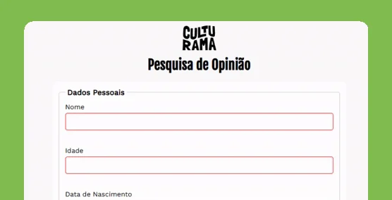
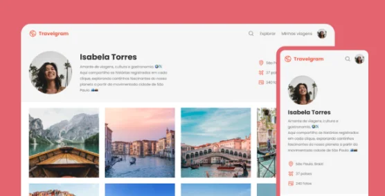
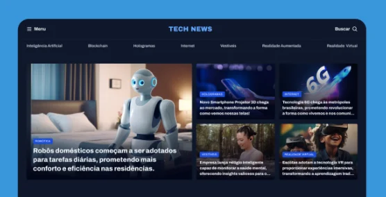
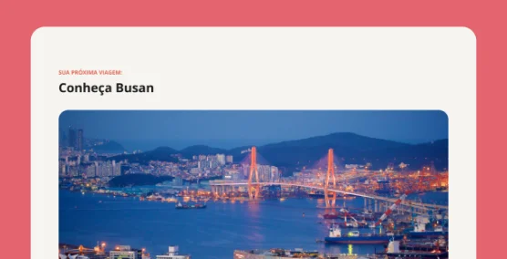
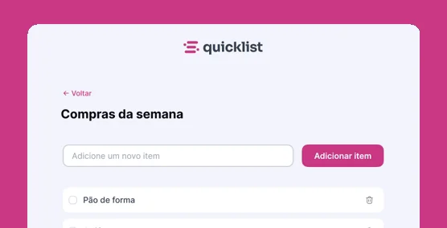

Pesquisa Culturama (ver site publicado, abre em nova aba)
Formulário de pesquisa desenvolvido com HTML5 e CSS3, explorando campos, estruturação e estilização de formulários.
Código no GitHub: Pesquisa Culturama (abre em nova aba)Hello World! Meu nome é Wesley Lauwer e sou
Sou apaixonado por tecnologia e estou construindo minha trajetória no desenvolvimento web. Aqui compartilho meus projetos, conhecimentos e minha evolução como desenvolvedor.
Meu trabalho

Formulário de pesquisa desenvolvido com HTML5 e CSS3, explorando campos, estruturação e estilização de formulários.
Código no GitHub: Pesquisa Culturama (abre em nova aba)Landing page desenvolvida com HTML5 e CSS3, aplicando conceitos de estruturação e estilização de interfaces.
Código no GitHub: Tecboard (abre em nova aba)
Página de perfil de viagens desenvolvida com HTML5 e CSS3, utilizando Flexbox para organização dos elementos.
Código no GitHub: Perfil de Viagens (abre em nova aba)
Portal de notícias desenvolvido com HTML5 e CSS3, utilizando CSS Grid para estruturar o conteúdo.
Código no GitHub: Portal de Notícias (abre em nova aba)
Página de apresentação de um destino turístico, desenvolvida com HTML semântico e CSS3.
Código no GitHub: Local Turístico (abre em nova aba)
Lista de compras interativa desenvolvida com HTML5, CSS3 e JavaScript, permitindo adicionar e remover itens.
Código no GitHub: Quicklist (abre em nova aba)Meus serviços
Desenvolvimento de páginas para apresentar negócios, serviços e produtos na internet.
Criação de interfaces adaptadas para celulares, tablets e computadores.
Construção de páginas web utilizando tecnologias e boas práticas de desenvolvimento.